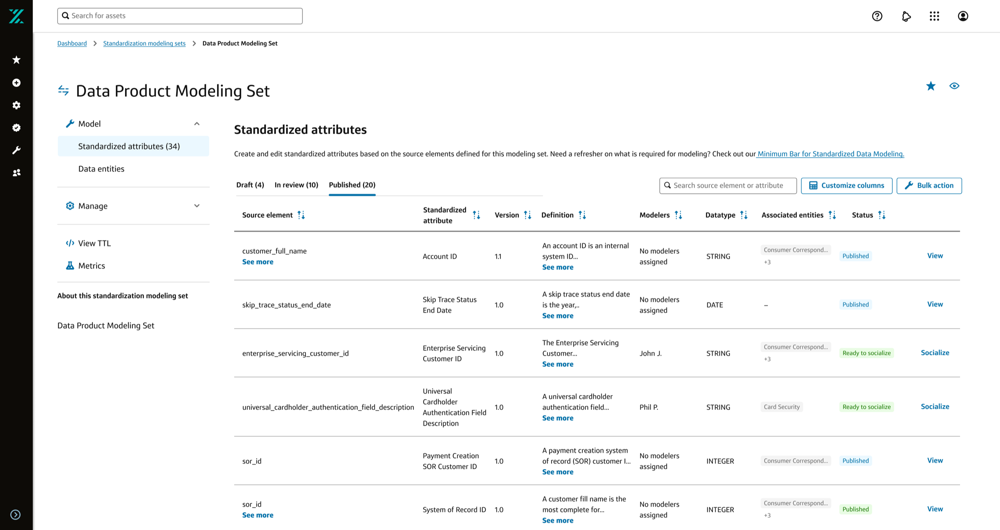
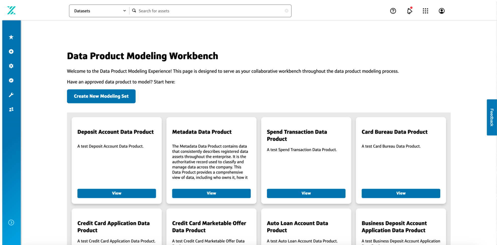
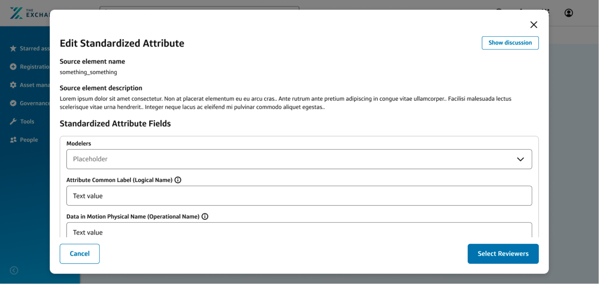
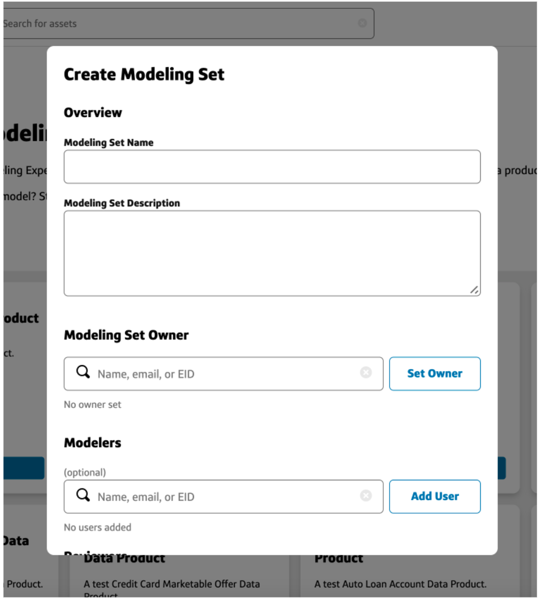
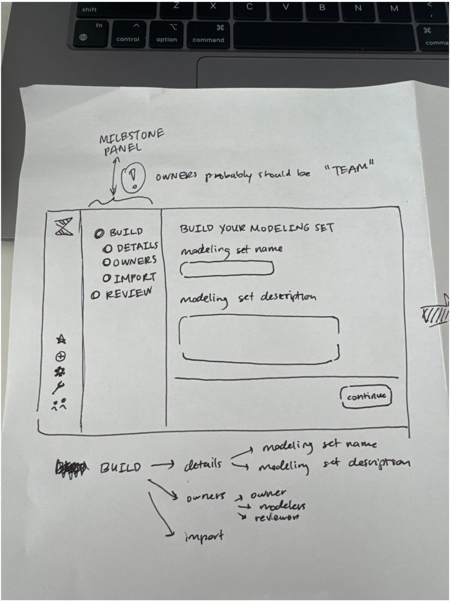
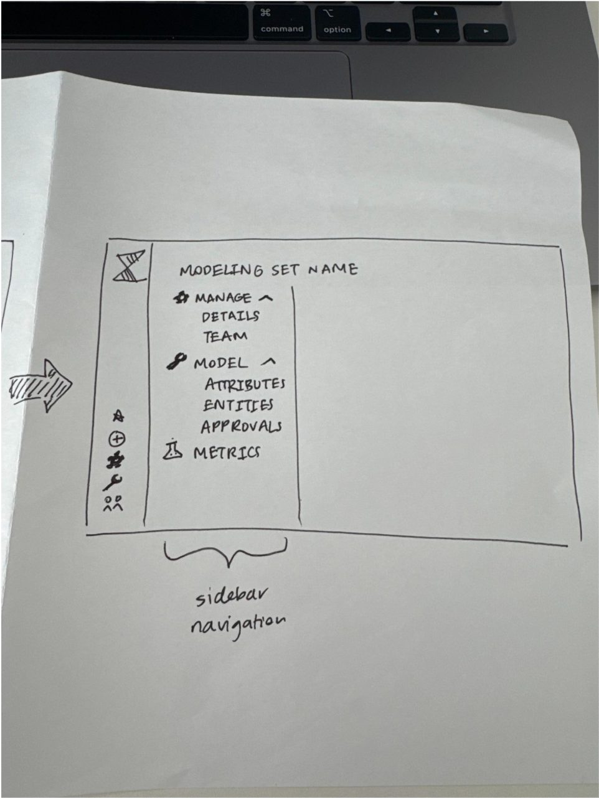
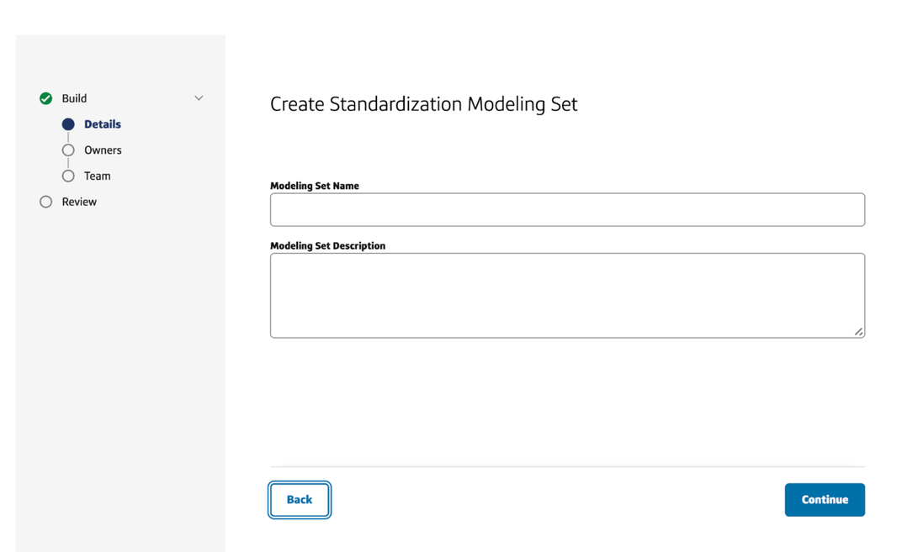

Overview
Workbench is an internal tool for Capital One's Enterprise Data organization. It gives data modelers a single place to model data products by registering, defining, and governing the standardized data attributes they're built from — the shared, reusable definitions (names, data types, quality rules, privacy classifications, and calculation logic) that let data be discovered, trusted, and reused across teams. Before Workbench, data products were modeled in Google Sheets.
No designer was ever staffed to the project, so I picked it up alongside my assigned work. What started as a single modal grew into redesigning the tool around the Exchange design system's components and patterns, which got it through the innersourcing review it needed to launch. Within about six months, 35 data products had onboarded.
Jump to final design ↓Problem
Spreadsheets had no versioning, audit trail, validation, or visibility for the governance reviewers who signed off on what got published, and modeling a data product in them required scanning rows of attributes across many columns of metadata, which led to fatigue and cognitive overload. Collaboration was also difficult, since comments got lost in the sheet or glossed over. A small platform team in Enterprise Data set out to build a real tool to replace them — but it was conceived and built entirely by engineering, with a product partner driving scope.
When I learned about Workbench, I raised it with my manager, and we agreed it was an experience risk: a governance-facing tool, built without UX involvement, heading toward a real launch. There was no plan to staff design, and I already had a working relationship with the product partner, so I picked it up side of desk, on top of my assigned projects, rather than let it ship with no design input at all.
Approach
The scope didn't start as "redesign the platform." It started as a single, well-defined ask, and grew because the problems underneath it didn't stop at one screen.
One modal. The product partner's first ask was narrow and concrete: design the modal analysts use to model a new standardized attribute. It was the right entry point for side-of-desk work: scoped, bounded, and clearly valuable.
The scope kept growing. Designing that modal surfaced the same problems everywhere around it — inconsistent patterns in the attribute tables, the registration flow, and the hierarchy views. Asks for "just this screen" turned into requests for the whole modeling workspace.
Failing the innersourcing review forced the real fix. To be hosted on the Exchange, Capital One's internal platform for data products, a tool has to clear an innersourcing review. Workbench's original build failed it: the developers had built on the Exchange design system, but used its components incorrectly or in unexpected ways. That failure turned "help with a modal" into a full redesign.
Redesigning with the Exchange design system. I redesigned the modeling workspace, standardized-attribute tables, registration wizard, and delete/archive flows to use Exchange components the way they were intended — consistent patterns, accessible interactions, and a structure that could pass the review.
Because this was side-of-desk work, iteration happened in the open, directly on the exploration boards: annotated call-outs on breadcrumb placement, CTA hierarchy, table row alignment, and overflow states, worked through with the product partner in real time rather than in a formal review cycle.
Working notes against the standardized-attributes table — breadcrumb, CTA, and table-alignment fixes called out directly on the canvas.
Design review
Before jumping into screens, I put together a design review of the existing build for the product partner and engineering team. It walked through the original UI against Gravity's foundations and the Exchange design system, and I tagged every recommendation as low, medium, or high level of effort so the team could ship quick wins while planning the bigger changes.

The original landing page: every card had a full-width primary "View" button competing with "Create New Modeling Set."

The original attribute editor: source element info scrolled away as soon as modelers started filling in fields.

The original registration: name, description, owner, modelers, and reviewers stacked in a single scrolling modal.

Sketch: full-page registration with a milestone panel.

Sketch: sidebar navigation for a registered modeling set.
Final design
The core object in Workbench is a data product modeling set — a registered group of standardized attributes owned by a team. The redesign covers the end-to-end experience around it: registering a new set, populating it with standardized attributes, and building in guardrails so destructive actions can't happen by accident. Click into each area below.

A guided, multi-step wizard for defining basic info, ownership, and team permissions before submitting for review.
View detailsA dense data table plus a detailed form for defining an attribute's type, quality rules, privacy classification, and hierarchy.
View detailsConfirmation flows for deleting attributes and archiving sets, plus a banner that flags definitions generated by an ML model so modelers know to review them.
View detailsResults
The rebuilt experience passed the innersourcing review, and Workbench launched on the Exchange. From there, adoption moved fast: 35 data products were modeled through the tool within about six months of the pilot going live.
By the time that growth was visible, I'd rotated onto my next assignment. The side-of-desk work had already set the foundation, and the product partner carried it forward. By their account, it became the team's largest success of the year.
Takeaways
A tool built with zero staffed design time still had to clear a bar that only design work could get it past. Naming a risk is the first step; someone still has to own it. Next time, I'd push earlier for that conversation to end in a resourcing decision, so the work doesn't depend on whoever has the capacity to absorb it informally.
No formal user testing was ever conducted. With informal staffing and no research support, there wasn't a path to run it properly, and I decided shipping a compliant, usable tool mattered more than delaying for research I couldn't resource. The pilot's success is real, but it isn't the same as validated confidence, and it's the clearest gap in this project.
My role, specifically:
Next case study
Capital One — Kairos Policy-as-code →